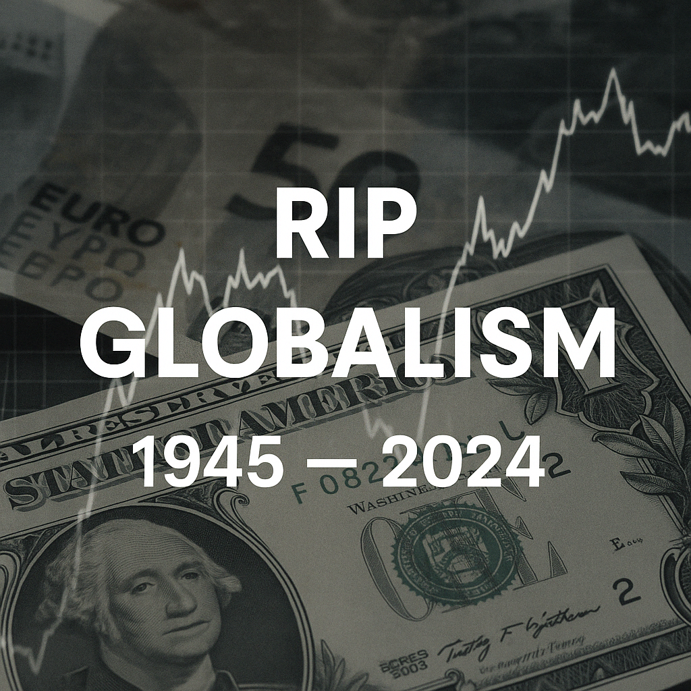

The End of an Era and the Birth of a New Economic Order
For nearly 80 years, globalism was the defining framework of American economic and foreign policy... That era is now over.
Central to this economic reset is the belief that the U.S. dollar must be weakened to make American exports competitive again. A strong dollar, while good for Wall Street and foreign buyers of U.S. assets, has made it harder for Main Street and the American manufacturers to sell abroad and compete with imports at home. By discouraging foreign capital inflows and resetting interest rate incentives, the Trump administration is betting on a structural shift: a cheaper dollar that favors producers over speculators.
This transition could have profound consequences for middle- and working-class Americans. On one hand, it will likely lead to higher prices for imported goods—everything from electronics to food—effectively raising the cost of living. On the other, it's possible it will spur a revival in domestic production, creating more blue-collar jobs and lifting wages in sectors long considered dead. Whether this trade-off pays off will depend on how fast industry scales, and how well policymakers cushion the blow of inflation in the interim.
| Time Frame | Expectations | Probability of Success |
|---|---|---|
| 0–18 months | Inflation, consumer pain, market volatility | 10–20% |
| 18 months–5 years | Industrial recovery or strategy collapse | 20–25% |
| 5–15 years | Structural realignment of trade & sovereignty | 30–40% |
| Failure Risk | Stagflation, capital flight, loss of global leverage | 50–60% |
RIP Globalism. In less than 100 days by the words and actions of the Trump administration, gone is the perception that we could run persistent deficits and float on financial dominance forever.
In its place rises a new, messy, confrontational worldview: industrial sovereignty, controlled capital, and territorial identity.
The death of globalism isn’t just a policy shift—it’s a cultural and generational realignment. The world is watching to see whether this new experiment ends in rebirth—or ruins.
History will judge. But 2024, in my view, will be remembered as the year the music stopped.